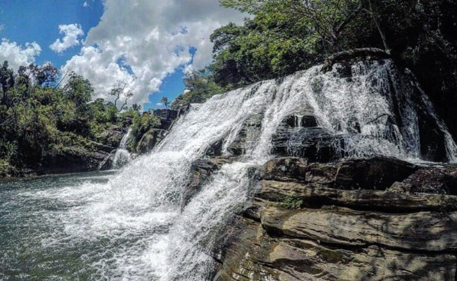

Cachoeira da Fumaça
Uma das atrações naturais mais conhecidas de Carrancas, a Cachoeira da Fumaça encanta os visitantes com suas quedas d'água e belas paisagens.
Seu guia completo para explorar a cidade de Carrancas e suas belezas naturais.
Carrancas é uma cidade histórica com uma rica herança cultural. Fundada no século XIX, a cidade preserva sua arquitetura colonial e tradições locais.

Explore as cachoeiras, trilhas e paisagens naturais que Carrancas oferece. Não perca a oportunidade de visitar o Parque Nacional da Serra do Cipó.

Para aproveitar ao máximo sua visita, recomendamos levar roupas confortáveis, protetor solar e água. Além disso, respeite a natureza e siga as orientações dos guias locais.
Uma das atrações naturais mais conhecidas de Carrancas, a Cachoeira da Fumaça encanta os visitantes com suas quedas d'água e belas paisagens.
A Cachoeira Esmeralda possui águas de tonalidade esverdeada e é um dos lugares mais procurados para banho e contato com a natureza.
O Poço do Coração é um dos pontos turísticos naturais de Carrancas, conhecido por suas águas cristalinas e pelo cenário cercado de vegetação.